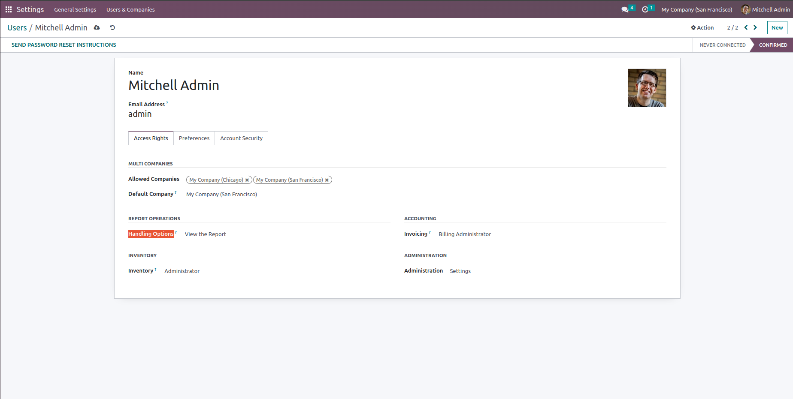
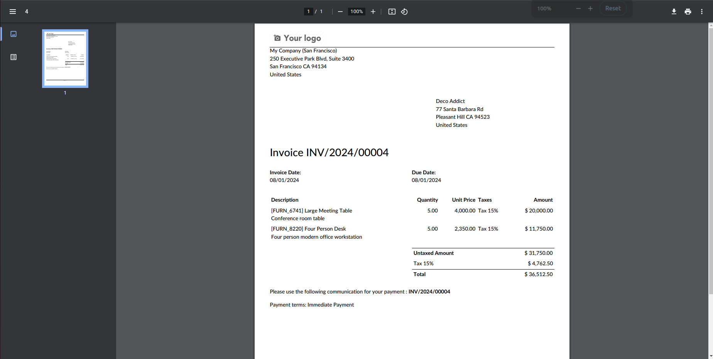
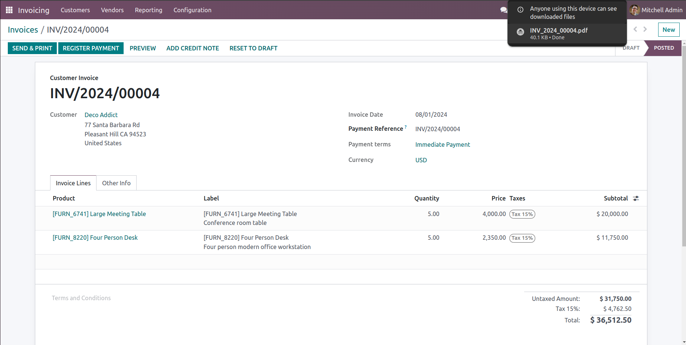
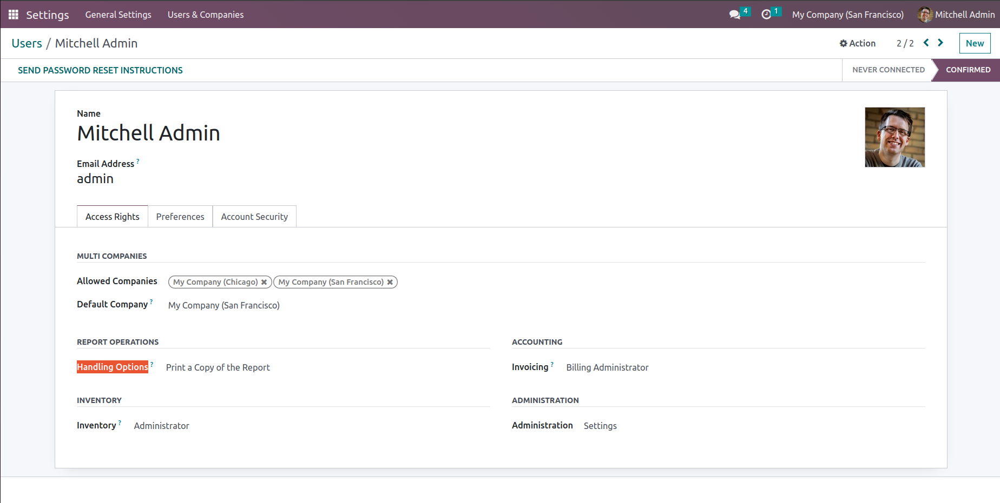
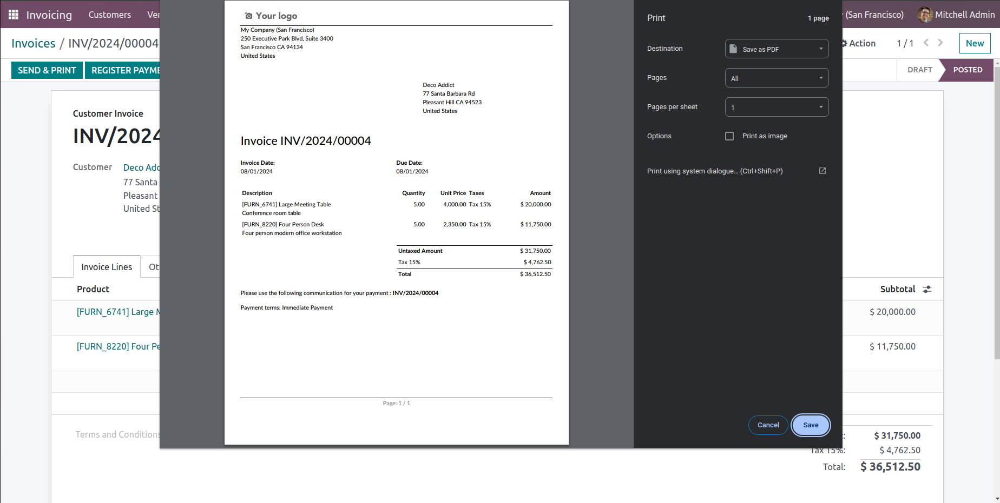

The functionality of this module encompasses three key user actions: Save a Copy, which enables users to download and store a PDF file locally for offline access; View Online, which provides a seamless way to view the PDF directly within a web browser or application without requiring a download; and Print PDF, which facilitates the printing of the document by opening a print dialog, allowing users to generate a physical copy directly from their device. These features cater to diverse user needs for document management, from local storage and immediate online viewing to physical printing.
Open PDF in Browser/View Document Online
Functionality
The "View the Report" feature allows users to view the PDF document directly within their web browser or application. Upon selecting this option, the PDF is rendered in a viewer that supports interactive features such as navigation, zoom, and search.

Benefits
This feature provides immediate access to the document without the need to download it, enabling users to quickly view and interact with the content. It is especially useful for reviewing the document on the go or in environments where a download is not necessary or desirable.

Download and Save PDF Document to Local Device
Functionality
The "Save a Copy of the Report" feature enables users to download and store a copy of the PDF file directly onto their personal device. Upon selection, the PDF file is transferred from the web server to the designated storage location, such as a specific directory or folder on the user's computer, smartphone, or tablet.
Benefits
This functionality provides users with the ability to access and manage the document offline, which is especially useful in environments with unreliable or no internet connectivity. Having a local copy allows for immediate access to the document without needing to re-download it, and it facilitates better file management and organization. Users can keep the document for future reference, ensuring they have a backup that is easily accessible.

Generate and Print PDF Document via Connected Printer
Functionality
The "Print a Copy of the Report" feature opens a print dialog that allows users to send the PDF document to an attached printer for physical output. Selecting this option presents users with a range of print settings and customization options, such as paper size, orientation, and print quality, before initiating the printing process.

Benefits
This feature enables users to produce a tangible copy of the document directly from their device, which is particularly useful for scenarios requiring hard copies such as meetings, presentations, or record-keeping. Users can customize various print parameters to meet their specific needs, ensuring that the printed document is suitable for its intended purpose.

Is there anything I can assist you with?
For any inquiries, assistance, or suggestions for new features, please feel free to reach out to us via email. askbytetechnolab@gmail.com